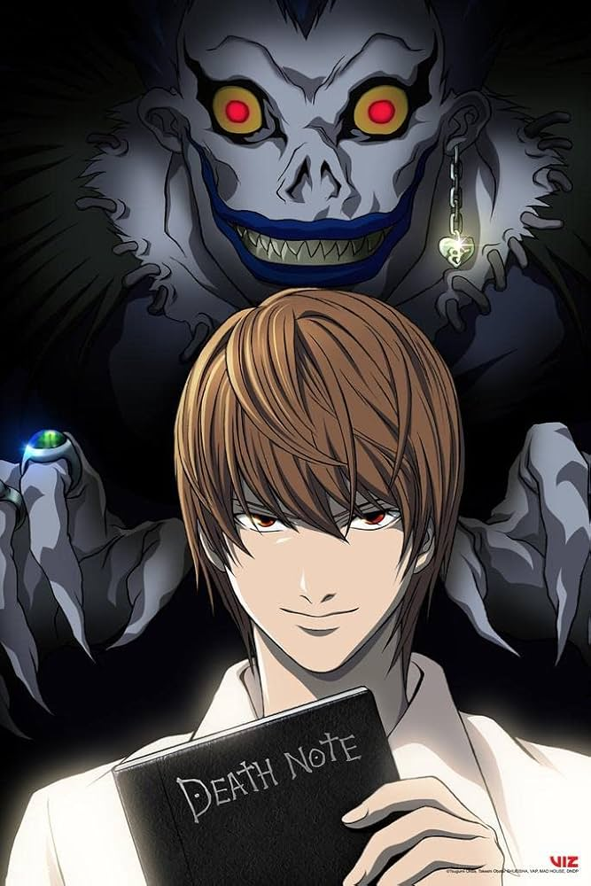

Light Yagami
Death Note
About
*Death Note* is about a smart student named Light Yagami who finds a magical notebook that can kill anyone whose name is written in it. The notebook belongs to a death god named Ryuk. Light decides to use the notebook to kill criminals and create a “better” world, and people start calling him “Kira.” But a genius detective known as L begins trying to catch him. The story becomes a battle of intelligence between Light and L, as both try to outsmart each other. Over time, Light becomes more obsessed with power, and it’s unclear if he’s truly doing good or becoming evil.
Personality
Light is charismatic, ambitious, and believes himself to be morally superior. He sees himself as a god creating a new world order. While initially having good intentions, his power corrupts him, leading him down a dark path.
Plot
The story surrounding Light Yagami in Death Note centers on a brilliant high school student who discovers a mysterious notebook called the Death Note. This notebook, dropped into the human world by the Shinigami Ryuk, grants Light the power to kill anyone simply by writing their name while picturing their face. Driven by a desire to rid the world of criminals and become the god of a new, “perfect” society, Light begins using the notebook to execute those he deems unworthy of life. As his actions draw global attention, he becomes known as “Kira,” a figure both feared and worshipped. Opposing him is the enigmatic detective L, who works to uncover Kira’s identity. What follows is an intense psychological battle of wits, as Light tries to outsmart law enforcement while maintaining his normal life and avoiding suspicion. Over time, Light’s sense of justice becomes increasingly twisted, and his willingness to manipulate and sacrifice others grows. The story explores themes of morality, power, and corruption, ultimately questioning whether absolute justice can exist without losing one’s humanity.
Abilities
- Death Note: Supernatural notebook that kills anyone whose name is written
- Shinigami Eyes: Ability to see a person's name and lifespan by looking at them
- Genius-Level Intellect: Strategic mind for outwitting opponents
- Memory Manipulation: Can erase or alter memories of those around him
Personality
Light is charismatic, ambitious, and believes himself to be morally superior. He sees himself as a god creating a new world order. While initially having good intentions, his power corrupts him, leading him down a dark path.